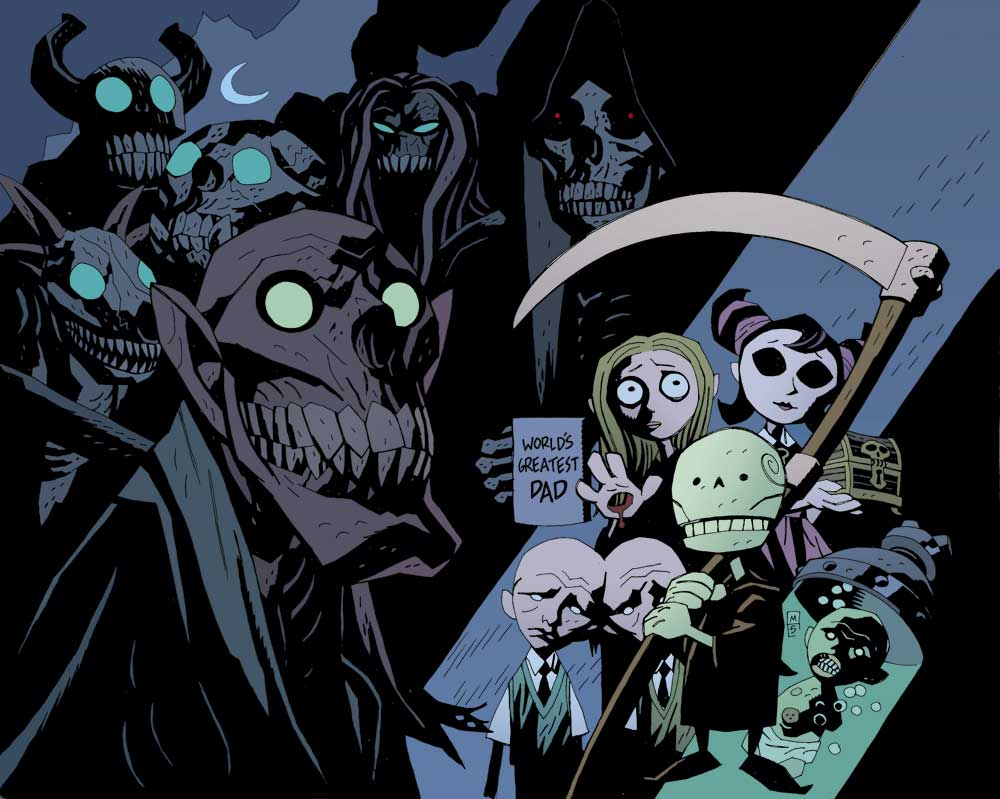

A reimagining of what After
John Tong | May, 13, 2022

There is more in death than that which is ever present on Earth. The mystery of death leads to the fascination or fear of it.
Cerberus, the Three-Headed Guard Dog of the Underworld, Death, Satan, The Devil, Lucifer, are a few of the most popular specimen of the Afterlife from different cultures and al with indifinitely entertaining views on life.
Through video games such as Doom Eternal, we can combat the evils and march through the heat of Hell. Or see the light on the other side, and see how the son of Death, Death Jr., studies for a science project in Death Jr. Root Of Evil.